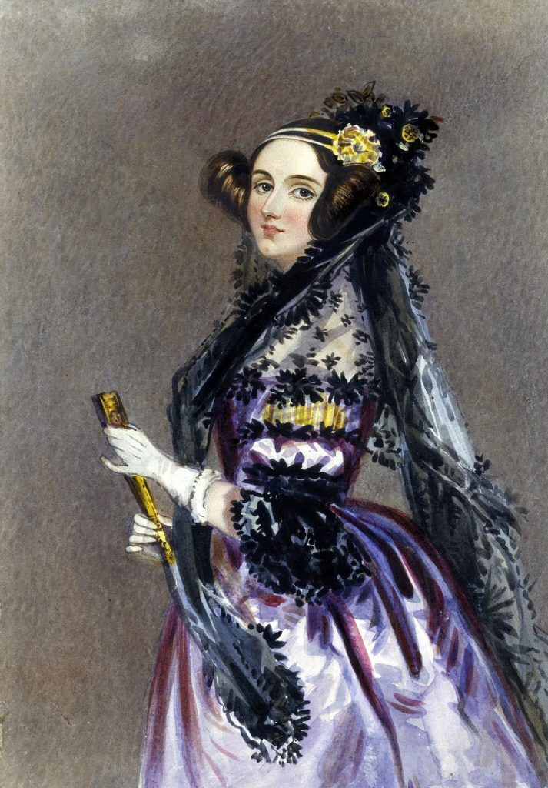

Click en cualquier parte para volver a la pagina principal Ada Lovelace Augusta Ada King, condesa de Lovelace (Londres, 10 de diciembre de 1815-íd., 27 de noviembre de 1852) estuvo registrada al nacer como Augusta Ada Byron y conocida habitualmente como Ada Lovelace, fue una matemática y escritora británica, célebre sobre todo por su trabajo acerca de la calculadora de uso general de Charles Babbage, la denominada máquina analítica. Entre sus notas sobre la máquina, se encuentra lo que se reconoce hoy como el primer algoritmo destinado a ser procesado por una máquina, por lo que se la considera como la primera programadora de ordenadores. Lovelace fue la única hija legítima del poeta lord Byron y su esposa lady Byron. Byron se separó de su esposa un mes después del nacimiento de Ada y dejó Inglaterra para siempre cuatro meses después. Conmemoró la despedida en un poema que comienza: "¿Es tu rostro como el de tu madre, mi bella hija? ¡ADA! Hija única de mi casa y mi corazón".4 Murió en la Guerra de independencia de Grecia cuando Ada tenía ocho años. A una edad temprana, su talento matemático la condujo a una relación de amistad prolongada con el matemático inglés Charles Babbage, y concretamente con la obra de Babbage sobre la máquina analítica.11 Entre 1842 y 1843, tradujo un artículo del ingeniero militar italiano Luigi Menabrea sobre la máquina, que complementó con un amplio conjunto de notas propias, denominado simplemente Notas. Estas notas contienen lo que se considera como el primer programa de ordenador, esto es, un algoritmo codificado para que una máquina lo procese. Las notas de Lovelace son importantes en la historia de la computación. Otros historiadores rechazan esta perspectiva y señalan que las notas personales de Babbage de los años 1836/1837 contienen los primeros programas para el motor.12 También desarrolló una visión de la capacidad de las computadoras para ir más allá del mero cálculo o el cálculo de números, mientras que muchos otros, incluido el propio Babbage, se centraron solo en esas capacidades. Su mentalidad de 'ciencia poética' la llevó a hacer preguntas sobre el motor analítico (como se muestra en sus notas) examinando cómo los individuos y la sociedad se relacionan con la tecnología como una herramienta de colaboración.  Biografía Infancia Ada Lovelace fue la única hija legítima de Anna Isabella y del poeta lord Byron,13 quien esperaba que su hijo fuera un niño y se sintió decepcionado cuando lady Byron dio a luz a una niña. Nació el domingo 10 de diciembre de 1815. La niña lleva el nombre de la media hermana de Byron, Augusta Leigh, y fue llamada Ada por el propio Byron. El 16 de enero de 1816, por orden de lord Byron, lady Byron se fue a la casa de sus padres en Kirkby Mallory (Leicestershire) llevando a su hija de cinco semanas con ella. Aunque la ley inglesa en ese momento otorgaba la custodia total de los hijos al padre en casos de separación, lord Byron no intentó reclamar sus derechos parentales, pero solicitó que su hermana lo mantuviera informado sobre el bienestar de Ada. En abril de 1816 su padre abandonó Inglaterra huyendo de sus acreedores y del escándalo que se cernía sobre él por los rumores de incesto. Meses más tarde, Annabella presentó una demanda de separación. Durante los ocho años que lord Byron estuvo fuera de su país hasta su muerte escribía con frecuencia a Augusta y preguntaba por la hija de ambos. Adolescencia En junio de 1826, Ada, que entonces tenía diez años, viajó por primera vez fuera de Inglaterra. Partió con todo un grupo (en el que se incluía su madre) y el viaje duró 15 meses, durante los cuales Ada disfrutó de todo lo nuevo que veían sus ojos, de todo lo que escuchaba, descubría, etc. En el otoño de 1827 acabó su viaje y se instalaron directamente en Bifrons, una mansión de campo muy alejada de la ciudad. En ese palacio no ocurría nada del interés de Ada; además su madre estaba frecuentemente fuera de casa, así que la niña se dedicaba a estudiar y a dejar volar su imaginación. Ese mismo año Ada empezó su formación en matemáticas. A los once años estaba obsesionada con la idea de volar; estaba decidida a inventar una máquina que le permitiera moverse por el aire. Su primer paso, en febrero de 1828, fue construir alas. Investigó diferentes materiales y tamaños. Consideró varios materiales para las alas: papel, seda de aceite, alambres y plumas. Pasó años estudiando la anatomía de las aves para determinar la proporción correcta entre las alas y el cuerpo, y creando bocetos de su soñado proyecto. Decidió escribir un libro, Flyology, ilustrando, con placas, algunos de sus hallazgos. Decidió qué equipo necesitaría; por ejemplo, una brújula, para "atravesar el país por el camino más directo", para que pueda superar montañas, ríos y valles. Su último paso fue integrar steam con el "arte de volar". A principios de 1829 contrajo una enfermedad grave, posiblemente sarampión, que le causó parálisis en las piernas y la obligó a guardar cama hasta mediados de 1832. Ese periodo la marcó profundamente, pero siguió estudiando. El año de su recuperación se mudó con su madre a Fordhook Manor, una mansión situada en Ealing, una aldea a 12 km del centro de Londres, muy popular entre la aristocracia londinense. Durante este tiempo Ada vivió su primer romance; se enamoró de un joven, hijo de John Hamble, que la ayudaba con los estudios dos horas al día. Vivieron su historia de amor en secreto durante algún tiempo, pero cuando lady Byron se enteró prohibió al joven entrar en su casa y relacionarse con su hija. Edad adulta El año que cumplía dieciocho años, Ada empezó a asistir a las fiestas de la alta sociedad londinense. En uno de sus primeros eventos conoció a Charles Babbage, la única persona que compartiría su fascinación por las cuestiones de mecánica. Babbage tenía cuarenta y cuatro años en ese momento y era conocido, entre otras cosas, por el proyecto que tenía entre manos: una calculadora mecánica que funcionaba sin la ayuda de un humano, llamada la máquina diferencial. En esos tiempos en Inglaterra se hizo famoso un avanzado artilugio, el telar de seda de Joseph Marie Jacquard, con el que ella estaba totalmente fascinada. Le maravillaba la posibilidad de idear y construir máquinas, como la de Jacquard, que permitieran al ser humano controlar procesos que anteriormente eran incontrolables o lo eran de una forma errática. Ada y Babbage se hicieron amigos. Su relación la estimuló intelectualmente; le ayudó a avanzar en sus especulaciones sobre el cálculo hasta concebir una brillante idea: construir un telar de Jacquard aplicado a los números, o en otras palabras: una computadora. La máquina diferencial de Babbage tenía todos los elementos que entusiasmaban a Ada, y principalmente demostraba que un día las máquinas harían posible volar. La amistad entre el científico y la joven duró toda su vida; se escribieron cartas hasta la muerte de ella. Educación A lo largo de sus enfermedades, continuó su educación. La obsesión de su madre de desarraigar cualquiera de las locuras de las que acusó a Byron fue una de las razones por las que Ada aprendió matemáticas desde temprana edad. William Frend, William King, y Mary Somerville, la destacada investigadora y autora del siglo XIX, la educaron en matemáticas y ciencias. Uno de sus tutores posteriores fue el matemático y lógico Augustus De Morgan. A partir de 1832, cuando tenía diecisiete años, sus habilidades matemáticas comenzaron a surgir, y su interés por las matemáticas dominó la mayor parte de su vida adulta. En una carta a lady Byron, De Morgan sugirió que la habilidad de su hija en matemáticas podría llevarla a convertirse en "una investigadora matemática, quizás de eminencia de primer nivel". Lovelace a menudo cuestionaba suposiciones básicas integrando poesía y ciencia. Mientras estudiaba cálculo diferencial, le escribió a De Morgan: Puedo señalar que las curiosas transformaciones que pueden sufrir muchas fórmulas, la identidad insospechada para un principiante aparentemente imposible de formas extremadamente diferentes a primera vista, creo que es una de las principales dificultades en la primera parte de los estudios matemáticos. A menudo me acuerdo de ciertos duendes y hadas de los que uno lee, que ahora están en los codos en una forma, y el siguiente minuto en una forma muy diferente. Lovelace creía que la intuición y la imaginación eran críticas para la aplicación efectiva de conceptos matemáticos y científicos. Valoraba la metafísica tanto como las matemáticas, y las veía como herramientas para explorar "los mundos invisibles que nos rodean". El primer programa de ordenador Las Notas fueron etiquetadas alfabéticamente de la A a la G. La nota G estaba dedicada a los números de Bernoulli; en este apartado Ada describe con detalle las operaciones mediante las cuales las tarjetas perforadas "tejerían" una secuencia de números en la máquina analítica. Este código está considerado como el primer algoritmo específicamente diseñado para ser ejecutado por un ordenador, aunque nunca fue probado ya que la máquina nunca llegó a construirse. Pero podemos concluir que la nota G es el algoritmo de Ada, así que a ella se la reconoce como la primera programadora de la historia,16 la primera persona en describir un lenguaje de programación de carácter general interpretando las ideas de Babbage, pero reconociéndosele la plena autoría y originalidad de sus aportes. Las Notas de Ada se publicaron en la revista Scientific Memoirs en septiembre de 1843, con el título de "Sketch of the analytical engine invented by Charles Babbage".17 Ella firmó con sus iniciales A. A. L., pero pronto se supo a quién correspondían. Su condición femenina perjudicó su trabajo y los científicos no se lo tomaron en serio. En sus notas, Ada dice que la «máquina analítica» sólo podía dar información disponible que ya era conocida: vio claramente que no podía originar conocimiento. Su trabajo fue olvidado por muchos años, atribuyéndole exclusivamente un papel de transcriptora de las notas de Babbage, cuando en verdad, el trabajo de Lovelace fue, como relata Plant, "mucho más influyente -y tres veces más extenso- que el texto del que se suponía que era meramente accesorio".18 Este mismo caracterizó su aporte al llamarla su "intérprete"; sin embargo recientes investigaciones muestran la originalidad de su punto de vista sobre las instrucciones necesarias para el funcionamiento de la «máquina analítica». En efecto, Lovelace "había creado el primer ejemplo de lo que más tarde se conocería como programación de computadoras"18 y es, por lo tanto, la primera programadora de la historia de la computación. Legado Sugirió el uso de tarjetas perforadas como método de entrada de información e instrucciones a la máquina analítica.24 Además introdujo una notación para escribir programas, principalmente basada en el dominio que Ada tenía sobre el texto de Luigi Menabrea de 1842 (que comentó personalmente completándolo con anotaciones que son más extensas que el texto mismo) sobre el funcionamiento del telar de Jacquard así como de la máquina analítica de Babbage. Es reseñable además su mención sobre la existencia de ceros o estado neutro en las tarjetas perforadas siendo que las tarjetas representaban para la máquina de Babbage números decimales y no binarios (8 perforaciones equivaldrían entonces a 8 unidades).